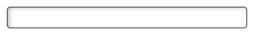
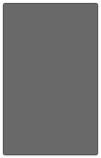
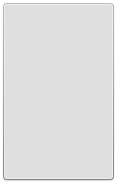
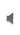
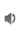
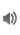
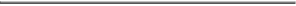

This topic provides a description of the Flash assets that are included with this SDK. All assets are defined in the
qnx.ui.skins.SkinAssets class.
The following components are described in detail:
The CellRendererSkinBlack skin uses the following assets:
| Description | State | Asset | Image |
|---|---|---|---|
| The background skin for a cell in up state, in the dark color theme. | Up | SkinAssets.CellRendererUpBlack | |
| The background skin for a cell in the up state, in the dark color theme, using alternating row colors. | Up (alternating row colors) | SkinAssets.CellRendererUpOddBlack | |
| The background skin for a cell in the selected state, in the dark color theme. | Selected | SkinAssets.CellRendererSelected | |
| The background skin for a cell in the down state, in the dark color theme. | Down | SkinAssets.CellRendererSelected | |
| The background skin for a cell in the disabled state, in the dark color theme. | Disabled | SkinAssets.CellRendererDisabledBlack |
The CellRendererSkinWhite skin uses the following assets:
| Description | State | Asset | Image |
|---|---|---|---|
| The background skin for a cell in the up state in the light color theme. | Up | SkinAssets.CellRendererUpWhite | |
| The background skin for a cell in the up state, in the light color theme, using alternating row colors. | Up (alternating row colors) | SkinAssets.CellRendererUpOddWhite | |
| The background skin for a cell in the selected state, in the light color theme. | Selected | SkinAssets.CellRendererSelected | |
| The background skin for a cell in the down state, in the light color theme. | Down | SkinAssets.CellRendererSelected | |
| The background skin for a cell in the disabled state, in the light color theme. | Disabled | SkinAssets.CellRendererDisabledWhite |
| Description | Asset | Image |
|---|---|---|
| The background skin for a text input field with focus. | SkinAssets.TextInputFocus | |
| The background skin for a text input field in the key up state. | SkinAssets.TextInputUp |  |
| The background skin for a text input field in the key down state. | SkinAssets.TextInputDown |
The RoundedButtonSkinBlack class uses the following assets:
| Description | State | Asset | Image |
|---|---|---|---|
| The background skin for a rounded button in the up state, in the dark color theme. | Up | SkinAssets.RoundedButtonUpBlack | |
| The background skin for a rounded button in the selected state, in the dark color theme. | Selected | SkinAssets.RoundedButtonSelectedBlack |

|
| The background skin for a rounded button in the down state, in the dark color theme. | Down | SkinAssets.RoundedButtonSelected |
|
| The background skin for a rounded button in the disabled state, in the dark color theme. | Disabled | SkinAssets.RoundedButtonDisabledBlack |
The RoundedButtonSkinWhite class uses the following assets:
| Description | State | Asset | Image |
|---|---|---|---|
| The background skin for a rounded button in the up state, in the light color theme. | Up | SkinAssets.RoundedButtonUpWhite | |
| The background skin for a rounded button in the selected state, in the light color theme. | Selected | SkinAssets.RoundedButtonSelected | |
| The background skin for a rounded button, in the disabled state, in the light color theme. | Disabled | SkinAssets.RoundedButtonDisabledWhite | |
| The background skin for a rounded button, in the down state, in the light color theme. | Down | SkinAssets.RoundedButtonSelected |
The CheckBoxSkinBlack skin uses the following assets:
| Description | State | Asset | Image |
|---|---|---|---|
| The background skin for a check box in the up state, in the dark color theme. | Up | SkinAssets.CheckBoxUpBlack | |
| The background skin for a check box, in the selected state, in the dark color theme. | Selected | SkinAssets.CheckBoxDownSelected | |
| The background skin for a check box, in the down state, in the dark color theme. | Down | SkinAssets.CheckBoxDownSelected | |
| The background skin for a check box, in the disabled state, for the dark color theme. | Disabled | SkinAssets.CheckBoxDisabledBlack | |
| The background skin for a disabled check box, in the selected state, in the dark color theme. | Disabled and Selected | SkinAssets.CheckBoxDisabledSelectedBlack |
The CheckBoxSkinWhite skin uses the following assets:
| Description | State | Asset | Image |
|---|---|---|---|
| The background skin for a check box, in the up state, in the light color theme. | Up | SkinAssets.CheckBoxUpWhite | |
| The background skin for a check box, in the selected state, in the light color theme. | Selected | SkinAssets.CheckBoxSelectedWhite | |
| The background skin for a check box, in the down state, in the light color theme. | Down | SkinAssets.CheckBoxSelectedWhite | |
| The background skin for a check box, in the disabled state, in the light color theme. | Disabled | SkinAssets.CheckBoxDisabledWhite |

|
| The background skin for a check box in the disabled, selected state, in the light color theme. | Disabled and Selected | SkinAssets.CheckBoxDisabledSelectedWhite |

|
A toggleswitch has three skinnable elements: the track, fill and thumb( button ) elements. Currently, there is no dark color theme for the toggle switch component.
The ToggleSwitchTrackSkinWhite class uses the following assets:
| Description | Asset | Image |
|---|---|---|
| The skin for the toggleswitch track in the light color theme. | SkinAssets.ToggleSwitchTrackWhite |
The ToggleSwitchFillSkin class uses the following assets:
| Description | Asset | Image |
|---|---|---|
| The skin for the toggleswitch fill in the light color theme. | SkinAssets.ToggleSwitchTrackSelected |
The ToggleSwitchThumbSkinBlack class uses the following assets:
| Description | State | Asset | Image |
|---|---|---|---|
| The background skin for a rounded button, in the up state, in the dark color theme. | Up | SkinAssets.RoundedButtonUpBlack | |
| The background skin for a rounded button, in the disabled state, in the dark color theme. | Disabled | SkinAssets.RoundedButtonDisabledBlack |
The ToggleSwitchThumbSkinWhite class uses the following assets:
| Description | State | Asset | Image |
|---|---|---|---|
| The background skin for a rounded button, in the up state, in the light color theme. | Up | SkinAssets.RoundedButtonUpWhite | |
| The background skin for a rounded button, in the disabled state, in the light color theme. | Disabled | SkinAssets.RoundedButtonDisabledWhite |
The dropdown is comprised of three skinnable elements - the drop down button, the dropdown list background and the cell renderer skin for the drop down list item.
The DropDownButtonSkinBlack class uses the following assets:
| Description | State | Asset | Image |
|---|---|---|---|
| The button skin for the drop down, in the up state, in the dark color theme. | Up | SkinAssets.DropDownUpBlack | |
| The button skin for the drop down, in the down state, in the dark color theme. | Down | SkinAssets.DropDownUpSelectedBlack | |
| The button skin for the drop down, in the selected state, in the dark color theme. | Selected | SkinAssets.DropDownUpSelectedBlack | |
| The button skin for the drop down, in the disabled state, in the dark color theme. | Disabled | SkinAssets.DropDownDisabledBlack |
The DropDownButtonSkinWhite class uses the following assets:
| Description | State | Asset | Image |
|---|---|---|---|
| The button skin for the drop down, in the up state, in the light color theme. | Up | SkinAssets.DropDownUpWhite | |
| The button skin for the drop down, in the down state, in the light color theme. | Down | SkinAssets.DropDownUpSelectedWhite | |
| The button skin for the drop down, in the selected state, in the light color theme. | Selected | SkinAssets.DropDownUpSelectedWhite |

|
| The button skin for the drop down, in the disabled state, in the light color theme. | Disabled | SkinAssets.DropDownDisabledWhite |
The DropDownBackgroundSkinBlack class uses the following assets:
| Description | State | Image |
|---|---|---|
| The image used for the background of the drop down list, in the dark color theme. | SkinAssets.DropDownBackgroundBlack |  |
The DropDownBackgroundSkinWhite class uses the following assets:
| Description | Asset | Image |
|---|---|---|
| The image used for the background of the drop down list, in the light color theme. | SkinAssets.DropDownBackgroundWhite |  |
The CellRendererSkinBlack class uses the following assets:
| Description | State | Asset | Image |
|---|---|---|---|
| The background skin for a cell, in the up state, in the dark color theme. | Up | SkinAssets.CellRendererUpBlack | |
| The background skin for a cell, in the up state, in the dark color theme, with alternating row colors. | Up (alternating row colors) | SkinAssets.CellRendererUpOddBlack | |
| The background skin for a cell, in the selected state, in the dark color theme. | Selected | SkinAssets.CellRendererSelected | |
| The background skin for a cell, in the down state, in the dark color theme. | Down | SkinAssets.CellRendererSelected | |
| The background skin for a cell, in the disabled state, in the dark color theme. | Disabled | SkinAssets.CellRendererDisabledBlack |
The CellRendererSkinWhite class uses the following assets:
| Description | State | Asset | Image |
|---|---|---|---|
| The background skin for a cell, in the up state, in the light color theme. | Up | SkinAssets.CellRendererUpWhite | |
| The background skin for a cell, in the up state, in the light color theme, with alternating row colors. | Up (alternating row colors) | SkinAssets.CellRendererUpOddWhite | |
| The background skin for a cell, in the selected state, in the light color theme. | Selected | SkinAssets.CellRendererSelected | |
| The background skin for a cell, in the down state, in the light color theme. | Down | SkinAssets.CellRendererSelected | |
| The background skin for a cell, in the disabled state, in the light color theme. | Disabled | SkinAssets.CellRendererDisabledWhite |
A volume control is comprised of two skins: track and thumb. The thumb is unique as it implements the IProgress interface. The fill for the volume control is a gradient that is drawn dynamically and can be accessed as a property on the volume control.
To set the the volume track fill gradient, use the fillColors and
disabledColors methods in the VolumeSlider class. The disabledColors
method sets the gradient fill for the disabled state. Both methods take an array of two color values.
The default gradients are listed in the following tables:
| State | Value 1 | Value 2 |
|---|---|---|
| Up | 0x05275b | 0x0172c4 |
| Disabled | 0x2d2d2d | 0x5f5f5f |
| State | Value 1 | Value 2 |
|---|---|---|
| Up | 0x2d2d2d | 0x5f5f5f |
| Disabled | 0x2d2d2d | 0x5f5f5f |
The VolumeTrackSkin class uses the following assets:
| Description | Asset | Image |
|---|---|---|
| The image used for the track icon. | SkinAssets.VolumeTrackBackground |
The VolumeThumbButtonSkinBlack class uses the following assets:
| Description | Asset | Image |
|---|---|---|
| 0 - 0.25 volume. | SkinAssets.VolumeIconUp0 | |
| 0.25 - 0.50 volume. | SkinAssets.VolumeIconUp1 | |
| 0.50 - 0.75 volume. | SkinAssets.VolumeIconUp2 | |
| 0.75 - 1.0 volume. | SkinAssets.VolumeIconUp3 |
The VolumeThumbButtonSkinBlack class uses the following assets:
| Description | Asset | Image |
|---|---|---|
| 0 - 0.25 volume. | SkinAssets.VolumeIconDisabled0 |  |
| 0.25 - 0.50 volume. | SkinAssets.VolumeIconDisabled1 |  |
| 0.50 - 0.75 volume. | SkinAssets.VolumeIconDisabled2 |  |
| 0.75 - 1.0 volume. | SkinAssets.VolumeIconDisabled3 |
The VolumeThumbButtonSkinWhite class uses the following assets:
| Description | Asset | Image |
|---|---|---|
| 0 - 0.25 volume. | SkinAssets.VolumeIconDisabled0 | |
| 0.25 - 0.50 volume. | SkinAssets.VolumeIconDisabled1 | |
| 0.50 - 0.75 volume. | SkinAssets.VolumeIconDisabled2 | |
| 0.75 - 1.0 volume. | SkinAssets.VolumeIconDisabled3 |
A slider is comprised of three skins, each with their own assets: track, fill and thumb. The track, fill, and thumb components look the same for both color schemes.
The SliderTrackSkin class uses the following assets:
| Description | Asset | Image |
|---|---|---|
| The background skin for the slider track. | SkinAssets.SliderTrackBackground |
The SliderTrackSkin class uses the following assets:
| Description | Asset | Image |
|---|---|---|
| The background skin for the slider track filler (disabled state). | SkinAssets.SliderTrackFillDisabled |  |
| The background skin for the slider track filler (up state). | SkinAssets.SliderTrackFillUp |
The SliderThumbSkinBlack class uses the following assets:
| Description | Asset | Image |
|---|---|---|
| The image used for the slider thumb (disabled). | SkinAssets.SliderThumbDisabled | |
| The image used for slider thumb (up state). | SkinAssets.SliderThumbUp | |
| The image used for slider thumb (down state). | SkinAssets.SliderThumbUp |
The Picker class uses the following assets:
| Description | Asset | Image |
|---|---|---|
| The black skin for the picker cell separator. | SkinAssets.PickerLineBlack | |
| The white skin for the picker cell separator. | SkinAssets.PickerLineWhite | |
| The white skin for the picker cell separator (in small picker mode). | SkinAssets.PickerLineWhite |